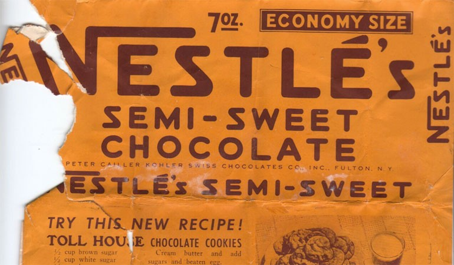
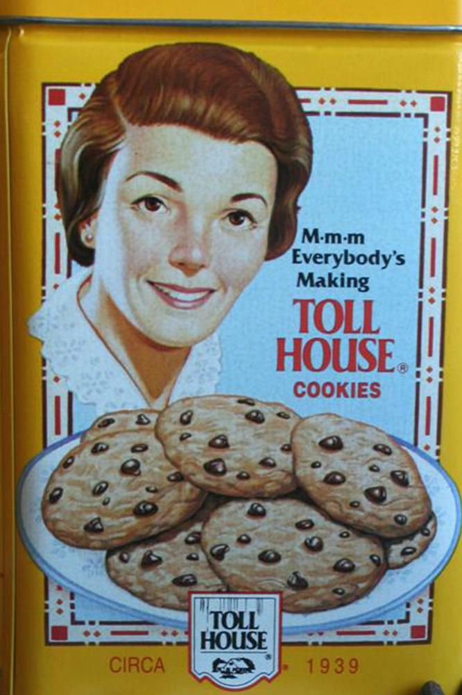

| Nicolas Becker |
|---|
| CSCE 242 |

The chocolate chip cookie is, somewhat surprisingly, a relatively new invention. Created in 1937 by Ruth Wakefield in her Toll House restaurant and inn, these cookies spread rather rapidly from their humble beginnings. By March 20, 1939 Nestle purchased the right to the cookie recipe for a mere dollar. This is truly where the popularity of this American cookie began.
By the time World War II had started the chocolate chip cookie was modestly popular on the East Coast putting it in a great position to spread. Through advertisements and local efforts the chocolate chip cookie became one of the most popular desserts to be sent to the soldiers in the war effort. The return of these soldiers prompted the spread of these cookies throughout the United States. Now as it had spread so far cookie stores and businesses began opening up and growing rapidly which in turn cemented the chocolate chip cookie into the American palate.
There are many variations to the chocolate chip cookie now that it has had time to grow yet there is still a consistant base design to it. Traditionally the cookie is made up of a dough rich in butter, sugar, and vanilla with a sprinkling of chocolate chips added in. Variations to this design include the double chocolate chip cookie with a cocoa flavored dough and m&m cookies. There are of course almost limiteless variations of how to design a basic chocolate chip cookie but there will always be the original Toll House Cookie.